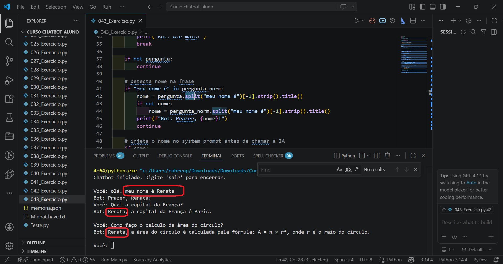
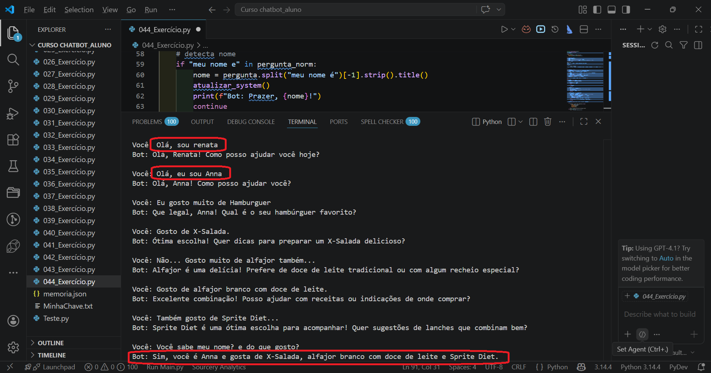
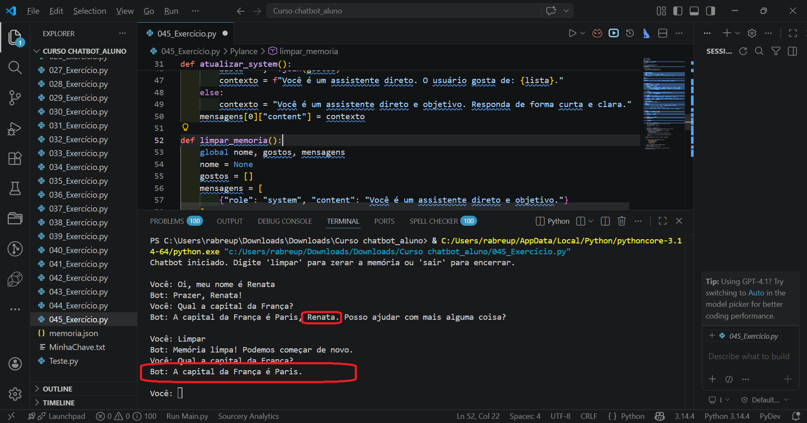
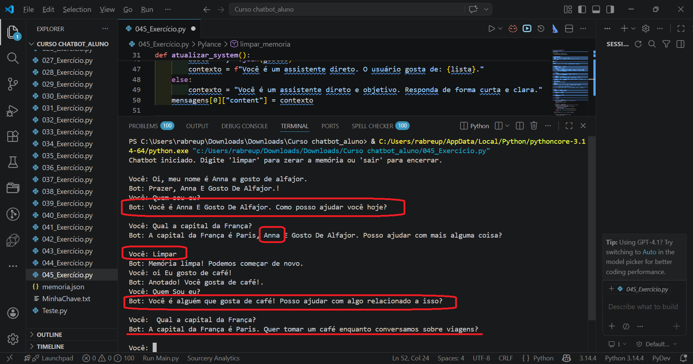

Na aula passada, nós guardamos o histórico inteiro em arquivo. Isso é útil, mas um arquivo guarda tudo sem distinção. Nem toda informação precisa passar pela IA.
A IA não lembra de nada por conta própria. Cada chamada à API começa do zero. O que parece "memória" é o histórico que o nosso código monta e reenvia a cada mensagem. Nós controlamos esse histórico, e isso significa que também controlamos o que a IA sabe.
Em vez de deixar a IA descobrir coisas importantes no meio do histórico, podemos guardar essas informações em variáveis Python e injetá-las no contexto na hora certa. O chatbot continua conversando normalmente, mas o código decide o que a IA precisa saber.
Vamos começar com a informação mais básica que um chatbot pode ter sobre o usuário: o nome. A ideia é simples. Quando o usuário digitar uma frase como "meu nome é Ana", o código detecta esse padrão, extrai o nome e guarda numa variável. A partir daí, toda vez que a IA for chamada, o nome já está no system prompt, garantido.
Para detectar o padrão e extrair o nome, nós usamos um método do Python chamado split(). Ele quebra uma string em pedaços, usando um texto como ponto de corte, e devolve uma lista com os fragmentos. Por exemplo, se aplicarmos split() na frase "meu nome é Ana" usando o texto "meu nome é" como divisor, o resultado é uma lista com dois itens: o que veio antes do divisor e o que veio depois. O que veio antes fica em [0] e o que veio depois em [1].
Mas há um detalhe interessante: o índice [-1] em Python sempre pega o último item de uma lista, independente do tamanho dela. Usando [-1] em vez de [1], nós pegamos o que veio depois do divisor mesmo que a frase seja mais complexa. E o .strip() no final remove espaços que possam ter sobrado nas bordas. O resultado é exatamente o nome digitado pelo usuário, limpo e pronto para usar.
"meu nome é Ana".split("meu nome é") → ["", " Ana"][-1] pega o último item da lista: " Ana".strip() remove os espaços das bordas: "Ana"nome guarda "Ana"Com o nome em mãos, o próximo passo é injetá-lo no system prompt. Fazemos isso atualizando mensagens[0]["content"] dentro do loop. Isso funciona porque mensagens[0] é o system prompt, e como é uma referência a um dicionário numa lista, podemos sobrescrevê-lo sempre que quisermos. A cada nova mensagem, a IA receberá o system prompt atualizado com o nome mais recente.
import warnings import urllib3 import httpx from dotenv import load_dotenv from openai import OpenAI import os warnings.filterwarnings("ignore") urllib3.disable_warnings() load_dotenv() client = OpenAI( api_key=os.getenv("OPENAI_API_KEY"), http_client=httpx.Client(verify=False) ) # variável controlada pelo código, fora do loop nome = None mensagens = [ { "role": "system", "content": "Você é um assistente direto e objetivo. Responda de forma curta e clara." } ] print("Chatbot iniciado. Digite 'sair' para encerrar.\n") while True: pergunta = input("Você: ").strip() pergunta_norm = pergunta.lower() if pergunta_norm == "sair": print("Bot: Até mais!") break if not pergunta: continue # detecta nome na frase if "meu nome é" in pergunta_norm: nome = pergunta.split("meu nome é")[-1].strip().title() if not nome: nome = pergunta_norm.split("meu nome é")[-1].strip().title() print(f"Bot: Prazer, {nome}!") continue # injeta o nome no system prompt antes de chamar a IA if nome: mensagens[0]["content"] = ( f"Você é um assistente direto e objetivo. " f"O nome do usuário é {nome}. Use o nome dele com moderação. " f"Responda de forma curta e clara." ) mensagens.append({"role": "user", "content": pergunta}) try: resposta = client.chat.completions.create( model="gpt-4.1-mini", messages=mensagens, max_tokens=80, temperature=0.3 ) texto = resposta.choices[0].message.content except Exception as e: texto = "Desculpe, houve um erro." mensagens.append({"role": "assistant", "content": texto}) print("Bot:", texto, "\n")
| nome = None | Variável definida fora do loop, antes de tudo começar. O None significa "ainda não temos essa informação". Quando o usuário disser o nome, essa variável será preenchida e vai permanecer assim mesmo que o loop execute mais 100 vezes. |
| "meu nome é" in pergunta_norm | Verifica se a frase normalizada contém o padrão que queremos detectar. O operador in retorna True se o texto do lado esquerdo existe dentro do texto do lado direito. Usamos pergunta_norm para a comparação, garantindo que "MEU NOME É", "Meu Nome É" e "meu nome é" sejam todos detectados. |
| pergunta vs pergunta_norm | Duas versões do mesmo input com usos diferentes. pergunta guarda o texto original do usuário, com maiúsculas e acentos, e é o que vai para o histórico da IA e para o split() que extrai o nome. pergunta_norm é a versão em minúsculas, usada apenas para as comparações de padrão. Manter as duas garante que a IA receba o texto como o usuário digitou. |
| .split("meu nome é")[-1] | Quebra a frase no ponto de corte e pega o que veio depois. O split() devolve uma lista. O [-1] é o índice negativo que sempre pega o último item da lista, que é exatamente o trecho depois do divisor. |
| .strip().title() | Remove espaços e capitaliza o nome. O .strip() tira espaços das bordas. O .title() coloca a primeira letra de cada palavra em maiúscula, então "ana paula" vira "Ana Paula", como um nome deve aparecer. |
| continue (após detectar nome) | Pula o restante do loop e vai para a próxima iteração. Quando o usuário está apenas dizendo o nome, não faz sentido chamar a IA para responder. O continue volta direto para o input(), aguardando a próxima mensagem. |
| mensagens[0]["content"] = ... | Atualiza o system prompt com o nome. mensagens[0] é o dicionário do system prompt. Ao reatribuir o campo "content", nós reescrevemos as instruções que a IA vai receber nessa chamada. Fazemos isso só se nome não for None, ou seja, só depois que o usuário se apresentou. |

Repara que o nome nunca vai para o histórico como uma mensagem de usuário. Ele existe apenas na variável Python e é injetado no system prompt. Isso significa que o código tem controle total: se a injeção for removida, a IA simplesmente deixa de saber que o nome existe.
Isso tem uma consequência prática importante relacionada à LGPD, a Lei Geral de Proteção de Dados. Quando injetamos informações no prompt e enviamos para a API da OpenAI, esses dados saem do nosso servidor e vão para um terceiro. Para o nome, isso normalmente é aceitável. Para dados sensíveis como CPF, dados bancários, endereço ou informações de saúde, pode ser uma violação. A regra prática é direta: dados que identificam ou expõem o usuário ficam no código, nunca no prompt.
O mesmo padrão de detecção que usamos para o nome funciona para gostos. A diferença é que gostos formam uma lista, não uma string única. Cada vez que o usuário menciona um gosto, queremos adicionar à lista. Mas com um cuidado importante: o mesmo gosto não deve aparecer mais de uma vez.
O operador in que usamos antes com strings também funciona com listas. Quando escrevemos gosto in gostos, o Python percorre cada item da lista verificando se algum é igual a gosto. Se já existir, retorna True. Se não existir, retorna False. Com esse cheque simples, antes de adicionar um gosto à lista, nós garantimos que ele ainda não está lá.
E aqui entra a normalizar() que revisamos juntos. Sem ela, "pizza" e "Pizza" seriam tratados como gostos diferentes, o que causaria duplicidade. Com ela, ambos viram "pizza" antes da comparação, e o cheque funciona corretamente.
import warnings import urllib3 import unicodedata import httpx from dotenv import load_dotenv from openai import OpenAI import os warnings.filterwarnings("ignore") urllib3.disable_warnings() load_dotenv() client = OpenAI( api_key=os.getenv("OPENAI_API_KEY"), http_client=httpx.Client(verify=False) ) def normalizar(texto): texto = texto.lower() texto = unicodedata.normalize("NFD", texto) texto = "".join(c for c in texto if unicodedata.category(c) != "Mn") return texto nome = None gostos = [] # lista de gostos controlada pelo código mensagens = [ { "role": "system", "content": "Você é um assistente direto e objetivo. Responda de forma curta e clara." } ] def atualizar_system(): """Reconstrói o system prompt com as informações atuais.""" partes = ["Você é um assistente direto e objetivo."] if nome: partes.append(f"O nome do usuário é {nome}. Use o nome com moderação.") if gostos: lista_gostos = ", ".join(gostos) partes.append(f"O usuário gosta de: {lista_gostos}.") partes.append("Responda de forma curta e clara.") mensagens[0]["content"] = " ".join(partes) print("Chatbot iniciado. Digite 'sair' para encerrar.\n") while True: pergunta = input("Você: ").strip() pergunta_norm = normalizar(pergunta) if pergunta_norm == "sair": print("Bot: Até mais!") break if not pergunta: continue # detecta nome if "meu nome e" in pergunta_norm: nome = pergunta.split("meu nome é")[-1].strip().title() atualizar_system() print(f"Bot: Prazer, {nome}!") continue # detecta gosto e evita duplicidade if "eu gosto de" in pergunta_norm: gosto_bruto = pergunta.lower().split("eu gosto de")[-1].strip() gosto_norm = normalizar(gosto_bruto) if gosto_norm not in [normalizar(g) for g in gostos]: gostos.append(gosto_bruto) atualizar_system() print(f"Bot: Anotado! Você gosta de {gosto_bruto}.") else: print(f"Bot: Já sei que você gosta de {gosto_bruto}!") continue mensagens.append({"role": "user", "content": pergunta}) try: resposta = client.chat.completions.create( model="gpt-4.1-mini", messages=mensagens, max_tokens=80, temperature=0.3 ) texto = resposta.choices[0].message.content except Exception as e: texto = "Desculpe, houve um erro." mensagens.append({"role": "assistant", "content": texto}) print("Bot:", texto, "\n")
| gostos = [] | Lista vazia que vai acumulando preferências. Assim como nome, ela vive fora do loop e persiste durante toda a sessão. A cada gosto detectado, um item é adicionado, sem repetição. |
| def atualizar_system() | Função que reconstrói o system prompt sempre que o perfil muda. Em vez de duplicar a lógica de injeção em vários lugares, centralizamos aqui. A função lê nome e gostos e monta uma string completa, atualizando mensagens[0]["content"]. |
| pergunta_norm | Versão normalizada do input, usada só para comparação. Nós guardamos a versão original em pergunta e a normalizada em pergunta_norm. Quando detectamos "meu nome e" (sem acento), o split é feito na pergunta original para preservar as maiúsculas do nome. |
| gosto_norm not in [normalizar(g) for g in gostos] | Compara o novo gosto com todos os existentes, normalizados. O trecho [normalizar(g) for g in gostos] cria uma lista temporária com todos os gostos já normalizados. Se o novo gosto normalizado não estiver nessa lista, ele é adicionado. Isso evita que "Pizza" e "pizza" sejam tratados como gostos diferentes. |
| gostos.append(gosto_bruto) | Adiciona a versão original, não a normalizada. Guardamos gosto_bruto (com acentos e capitalização original) para que a IA receba uma escrita natural. A normalização é usada só para comparação. |

Não vai. O código atual só detecta o padrão exato "eu gosto de". Variações como plural, sinônimos ou outras formas de expressar preferência passam despercebidas. Isso é uma limitação real e há formas de contorná-la, como usar a própria IA para analisar a frase e identificar se há uma preferência implícita. Mas isso adiciona complexidade e custo por chamada extra. Por ora, o padrão fixo resolve a maior parte dos casos práticos.
Levanta, respira, e quando voltar nós fazemos o chatbot responder de forma diferente dependendo do que sabe sobre o usuário.
Até agora o system prompt é sempre do mesmo jeito, só que com mais ou menos informação. Mas podemos ir além: o chatbot pode responder de formas completamente diferentes dependendo do que sabe sobre o usuário. Pensa assim: se a IA sabe o nome e os gostos, ela pode fazer referência a ambos. Se sabe só o nome, usa isso. Se sabe só os gostos, personaliza por aí. Se não sabe nada, responde de forma genérica.
Isso se chama resposta contextual, e a estrutura para implementar é um if/elif/else que verifica as combinações possíveis antes de montar o system prompt.
Neste mesmo exercício, vamos adicionar também uma função chamada limpar_memoria(), que zera tudo: nome, gostos e histórico. Para que uma função consiga modificar variáveis que foram definidas fora dela, precisamos usar a palavra-chave global. Ela diz ao Python: "essas variáveis não são locais, são as mesmas que existem fora desta função." Sem o global, o Python criaria cópias locais que sumiriam ao fim da função, sem alterar nada.
import warnings import urllib3 import unicodedata import httpx from dotenv import load_dotenv from openai import OpenAI import os warnings.filterwarnings("ignore") urllib3.disable_warnings() load_dotenv() client = OpenAI( api_key=os.getenv("OPENAI_API_KEY"), http_client=httpx.Client(verify=False) ) def normalizar(texto): texto = texto.lower() texto = unicodedata.normalize("NFD", texto) texto = "".join(c for c in texto if unicodedata.category(c) != "Mn") return texto nome = None gostos = [] mensagens = [ {"role": "system", "content": "Você é um assistente direto e objetivo."} ] def atualizar_system(): # resposta contextual: 4 cenários if nome and gostos: lista = ", ".join(gostos) contexto = ( f"Você é um assistente direto. O usuário se chama {nome} e gosta de: {lista}. " f"Use essas informações para personalizar as respostas quando fizer sentido. " f"Use o nome com moderação." ) elif nome: contexto = ( f"Você é um assistente direto. O usuário se chama {nome}. " f"Use o nome com moderação." ) elif gostos: lista = ", ".join(gostos) contexto = f"Você é um assistente direto. O usuário gosta de: {lista}." else: contexto = "Você é um assistente direto e objetivo. Responda de forma curta e clara." mensagens[0]["content"] = contexto def limpar_memoria(): global nome, gostos, mensagens nome = None gostos = [] mensagens = [ {"role": "system", "content": "Você é um assistente direto e objetivo."} ] print("Bot: Memória limpa! Podemos começar de novo.") print("Chatbot iniciado. Digite 'limpar' para zerar a memória ou 'sair' para encerrar.\n") while True: pergunta = input("Você: ").strip() pergunta_norm = normalizar(pergunta) if pergunta_norm == "sair": print("Bot: Até mais!") break if pergunta_norm == "limpar": limpar_memoria() continue if not pergunta: continue if "meu nome e" in pergunta_norm: nome = pergunta.split("meu nome é")[-1].strip().title() atualizar_system() print(f"Bot: Prazer, {nome}!") continue if "eu gosto de" in pergunta_norm: gosto_bruto = pergunta.lower().split("eu gosto de")[-1].strip() gosto_norm = normalizar(gosto_bruto) if gosto_norm not in [normalizar(g) for g in gostos]: gostos.append(gosto_bruto) atualizar_system() print(f"Bot: Anotado! Você gosta de {gosto_bruto}.") else: print(f"Bot: Já sei que você gosta de {gosto_bruto}!") continue mensagens.append({"role": "user", "content": pergunta}) try: resposta = client.chat.completions.create( model="gpt-4.1-mini", messages=mensagens, max_tokens=80, temperature=0.3 ) texto = resposta.choices[0].message.content except Exception as e: texto = "Desculpe, houve um erro." mensagens.append({"role": "assistant", "content": texto}) print("Bot:", texto, "\n")
| if nome and gostos: | Primeiro cenário: sabemos o nome e os gostos. O and retorna True só quando os dois lados são verdadeiros. Uma lista não vazia é considerada verdadeira em Python, então gostos sozinho já funciona como condição. |
| elif nome: | Segundo cenário: só sabemos o nome. O elif só é avaliado se o if anterior foi False. Chegando aqui, sabemos que ou gostos está vazio ou nome é None. Como o if acima exigiu os dois, e este só exige nome, o único caso que chega aqui é: tem nome, mas não tem gostos. |
| elif gostos: | Terceiro cenário: só sabemos os gostos. Se chegou aqui, nome é None. |
| else: | Quarto cenário: não sabemos nada. O chatbot responde de forma completamente genérica, sem nenhuma personalização. |
| global nome, gostos, mensagens | Avisa ao Python que essas variáveis são as do escopo externo. Sem essa linha, qualquer nome = None dentro da função criaria uma variável local nova, sem afetar a variável externa. Com global, a função literalmente modifica as variáveis originais. |
| mensagens = [{...}] | Recria a lista do zero dentro de limpar_memoria(). Isso descarta todo o histórico de conversa. O chatbot começa como se nunca tivesse sido usado, só com o system prompt inicial. |


Antes de partirmos para os exercícios, tem um assunto que não pode ficar de fora quando falamos em IA para sistemas reais: a tendência da IA de inventar respostas.
Isso já apareceu brevemente na aula 5, quando falamos sobre usar null em vez de dados fictícios. Mas vale aprofundar, porque o comportamento vai além de campos de JSON. A IA foi treinada para ser agradável. Ela foi otimizada para gerar respostas que o usuário considere satisfatórias, e isso cria um problema sutil: quando ela não tem informação suficiente, em vez de admitir, ela deduz. E deduz com muita confiança.
Uma vez pedi ao chatbot uma receita parecida com a do bolo de mandioca da minha avó. A IA imediatamente respondeu com uma receita "úmida, macia, com gostinho de coco", sem saber absolutamente nada sobre como aquele bolo era de verdade. Quando a pessoa foi corrigindo, dizendo que era seco, sem coco, pesado, a IA concordou e ajustou. Quando ela disse que tinha gosto de blueberry, a IA aceitou e inventou uma justificativa química. Em nenhum momento disse "não sei como era o bolo da sua avó". Ela simplesmente preencheu os espaços em branco com probabilidade.
E há uma implicação prática importante para quem constrói chatbots: nunca exibir erros de código diretamente ao usuário. Uma mensagem de erro do Python pode revelar detalhes da estrutura do sistema, nomes de variáveis, caminhos de arquivo. O try/except não é só para o código não travar. É para que o usuário final veja uma mensagem amigável, e não uma stack trace completa.
Agora é a sua vez.
046_Exercicio.py do zero"meu nome é", gostos com "eu gosto de" e cidade com "moro em", todos usando split()normalizar() com NFD para as comparações e para evitar duplicidade de gostosatualizar_system() deve montar o system prompt com o que o código sabe, incluindo cidade quando disponívellimpar_memoria() com global como primeira linha para zerar tudo💡 Dica: os exercícios 043 a 045 cobrem cada uma dessas peças separadamente, é uma boa referência enquanto você escreve.
import warnings import urllib3 import unicodedata import httpx from dotenv import load_dotenv from openai import OpenAI import os warnings.filterwarnings("ignore") urllib3.disable_warnings() load_dotenv() client = OpenAI( api_key=os.getenv("OPENAI_API_KEY"), http_client=httpx.Client(verify=False) ) def normalizar(texto): texto = texto.lower() texto = unicodedata.normalize("NFD", texto) texto = "".join(c for c in texto if unicodedata.category(c) != "Mn") return texto nome = None gostos = [] cidade = None # NOVO mensagens = [ {"role": "system", "content": "Você é um assistente direto e objetivo."} ] def atualizar_system(): if nome and gostos: lista = ", ".join(gostos) contexto = f"Você é um assistente direto. O usuário se chama {nome}" if cidade: # NOVO contexto += f" e mora em {cidade}" contexto += f" e gosta de: {lista}. Use essas informações com moderação." elif nome: contexto = f"Você é um assistente direto. O usuário se chama {nome}" if cidade: # NOVO contexto += f" e mora em {cidade}" contexto += ". Use o nome com moderação." elif gostos: lista = ", ".join(gostos) contexto = f"Você é um assistente direto. O usuário gosta de: {lista}." else: contexto = "Você é um assistente direto e objetivo. Responda de forma curta e clara." mensagens[0]["content"] = contexto def limpar_memoria(): global nome, gostos, mensagens, cidade # NOVO: cidade incluída nome = None gostos = [] cidade = None # NOVO mensagens = [ {"role": "system", "content": "Você é um assistente direto e objetivo."} ] print("Bot: Memória limpa! Podemos começar de novo.") print("Chatbot iniciado. Digite 'limpar' para zerar a memória ou 'sair' para encerrar.\n") while True: pergunta = input("Você: ").strip() pergunta_norm = normalizar(pergunta) if pergunta_norm == "sair": print("Bot: Até mais!") break if pergunta_norm == "limpar": limpar_memoria() continue if not pergunta: continue if "meu nome e" in pergunta_norm: nome = pergunta.split("meu nome é")[-1].strip().title() atualizar_system() print(f"Bot: Prazer, {nome}!") continue if "moro em" in pergunta_norm: # NOVO cidade = pergunta.lower().split("moro em")[-1].strip().title() atualizar_system() print(f"Bot: Entendido! Você mora em {cidade}.") continue if "eu gosto de" in pergunta_norm: gosto_bruto = pergunta.lower().split("eu gosto de")[-1].strip() gosto_norm = normalizar(gosto_bruto) if gosto_norm not in [normalizar(g) for g in gostos]: gostos.append(gosto_bruto) atualizar_system() print(f"Bot: Anotado! Você gosta de {gosto_bruto}.") else: print(f"Bot: Já sei que você gosta de {gosto_bruto}!") continue mensagens.append({"role": "user", "content": pergunta}) try: resposta = client.chat.completions.create( model="gpt-4.1-mini", messages=mensagens, max_tokens=80, temperature=0.3 ) texto = resposta.choices[0].message.content except Exception as e: texto = "Desculpe, houve um erro." mensagens.append({"role": "assistant", "content": texto}) print("Bot:", texto, "\n")
047_Exercicio.py do zero com um chatbot que detecta nome e gostos"meu nome é" com split() como nos exercícios anterioresextrair_gosto_via_ia(frase) que faz uma chamada separada à API com o prompt: "Analise a frase e responda APENAS com a preferência positiva identificada, ou com a palavra NENHUMA se não houver. Não inclua nenhum outro texto."normalizar()💡 Dica: o exercício 044 tem a estrutura de detecção e deduplicação de gostos que você vai precisar aqui.
import warnings import urllib3 import unicodedata import httpx from dotenv import load_dotenv from openai import OpenAI import os warnings.filterwarnings("ignore") urllib3.disable_warnings() load_dotenv() client = OpenAI( api_key=os.getenv("OPENAI_API_KEY"), http_client=httpx.Client(verify=False) ) def normalizar(texto): texto = texto.lower() texto = unicodedata.normalize("NFD", texto) texto = "".join(c for c in texto if unicodedata.category(c) != "Mn") return texto def extrair_gosto_via_ia(frase): """Usa o GPT para identificar se há uma preferência positiva na frase.""" try: r = client.chat.completions.create( model="gpt-4.1-mini", messages=[ { "role": "system", "content": ( "Analise a frase do usuário e responda APENAS com " "a preferência positiva identificada (ex: sushi, pizza) " "ou com a palavra NENHUMA se não houver preferência positiva. " "Não inclua nenhum outro texto." ) }, {"role": "user", "content": frase} ], max_tokens=20, temperature=0.1 ) resultado = r.choices[0].message.content.strip() return None if resultado.upper() == "NENHUMA" else resultado.lower() except: return None nome = None gostos = [] mensagens = [ {"role": "system", "content": "Você é um assistente direto e objetivo."} ] def atualizar_system(): if nome and gostos: lista = ", ".join(gostos) contexto = ( f"Você é um assistente direto. O usuário se chama {nome} " f"e gosta de: {lista}. Use essas informações com moderação." ) elif nome: contexto = f"Você é um assistente direto. O usuário se chama {nome}. Use o nome com moderação." elif gostos: lista = ", ".join(gostos) contexto = f"Você é um assistente direto. O usuário gosta de: {lista}." else: contexto = "Você é um assistente direto e objetivo. Responda de forma curta e clara." mensagens[0]["content"] = contexto print("Chatbot iniciado. Digite 'sair' para encerrar.\n") while True: pergunta = input("Você: ").strip() pergunta_norm = normalizar(pergunta) if pergunta_norm == "sair": print("Bot: Até mais!") break if not pergunta: continue if "meu nome e" in pergunta_norm: nome = pergunta.split("meu nome é")[-1].strip().title() atualizar_system() print(f"Bot: Prazer, {nome}!") continue # usa a IA para detectar se há um gosto na frase gosto_detectado = extrair_gosto_via_ia(pergunta) if gosto_detectado: gosto_norm = normalizar(gosto_detectado) if gosto_norm not in [normalizar(g) for g in gostos]: gostos.append(gosto_detectado) atualizar_system() print(f"Bot: Anotado que você gosta de {gosto_detectado}.") else: print(f"Bot: Já sei que você gosta de {gosto_detectado}!") continue mensagens.append({"role": "user", "content": pergunta}) try: resposta = client.chat.completions.create( model="gpt-4.1-mini", messages=mensagens, max_tokens=80, temperature=0.3 ) texto = resposta.choices[0].message.content except Exception as e: texto = "Desculpe, houve um erro." mensagens.append({"role": "assistant", "content": texto}) print("Bot:", texto, "\n")
048_Exercicio.py do zero com um chatbot para um tema à sua escolhaatualizar_system()normalizar() com NFD para comparações e deduplicaçãotry/except na chamada à API, exibindo mensagem amigável em caso de errolimpar_memoria() com global como primeira linha para resetar tudo💡 Dica: cada um desses itens foi trabalhado nos exercícios anteriores. Escreva do zero, consultando o que já fez como referência quando precisar.
import warnings import urllib3 import unicodedata import httpx from dotenv import load_dotenv from openai import OpenAI import os warnings.filterwarnings("ignore") urllib3.disable_warnings() load_dotenv() client = OpenAI( api_key=os.getenv("OPENAI_API_KEY"), http_client=httpx.Client(verify=False) ) def normalizar(texto): texto = texto.lower() texto = unicodedata.normalize("NFD", texto) texto = "".join(c for c in texto if unicodedata.category(c) != "Mn") return texto # perfil controlado pelo código nome = None generos = [] # gêneros literários preferidos LIMITE_MSG = 10 ULTIMAS_MSG = 5 total_entrada = 0 total_saida = 0 def atualizar_system(): # CONTEXTO base = "Você é a assistente virtual da Livraria Páginas, especializada em recomendar livros." # TAREFA if nome and generos: lista = ", ".join(generos) perfil = f"Atenda {nome} pelo nome. O cliente prefere: {lista}. Personalize as sugestões." elif nome: perfil = f"Atenda {nome} pelo nome com moderação." elif generos: lista = ", ".join(generos) perfil = f"O cliente prefere: {lista}. Use isso nas sugestões." else: perfil = "Atenda o cliente de forma acolhedora." # FORMATO + RESTRIÇÕES regras = ( "Responda em no máximo 3 frases. " "Fale apenas sobre livros, autores e a livraria. " "Se não souber algo, diga claramente que não sabe. " "Nunca invente títulos, autores ou preços." ) mensagens[0]["content"] = " ".join([base, perfil, regras]) def resumir_conversa(msgs_antigas): texto = "\n".join([f"{m['role']}: {m['content']}" for m in msgs_antigas]) r = client.chat.completions.create( model="gpt-4.1-mini", messages=[ {"role": "system", "content": "Resuma a conversa abaixo em 1 frase curta."}, {"role": "user", "content": texto} ], max_tokens=50, temperature=0.2 ) return r.choices[0].message.content def limpar_memoria(): global nome, generos, mensagens, total_entrada, total_saida nome = None generos = [] total_entrada = 0 total_saida = 0 mensagens = [{"role": "system", "content": ""}] atualizar_system() print("Livraria Páginas: Sessão reiniciada! Como posso ajudar?") mensagens = [{"role": "system", "content": ""}] atualizar_system() print("Livraria Páginas: Olá! Seja bem-vindo. Como posso ajudar?") print("(Digite 'limpar' para nova sessão ou 'sair' para encerrar)\n") while True: pergunta = input("Você: ").strip() pn = normalizar(pergunta) if pn == "sair": print("\n-- Resumo da sessão --") print(f"Tokens de entrada : {total_entrada}") print(f"Tokens de saída : {total_saida}") print(f"Total : {total_entrada + total_saida}") custo = (total_entrada * 0.00000015) + (total_saida * 0.0000006) print(f"Custo estimado : U${custo:.6f}") print("Livraria Páginas: Até a próxima leitura!") break if pn == "limpar": limpar_memoria() continue if not pergunta: continue if "meu nome e" in pn: nome = pergunta.split("meu nome é")[-1].strip().title() atualizar_system() print(f"Livraria Páginas: Que bom te ver, {nome}!") continue if "eu gosto de" in pn or "prefiro" in pn: divisor = "eu gosto de" if "eu gosto de" in pn else "prefiro" genero = pergunta.lower().split(divisor)[-1].strip() gnorm = normalizar(genero) if gnorm not in [normalizar(g) for g in generos]: generos.append(genero) atualizar_system() print(f"Livraria Páginas: Ótimo! Tenho ótimas sugestões de {genero}.") else: print(f"Livraria Páginas: Já sei que você curte {genero}!") continue # memória resumida if len(mensagens) > LIMITE_MSG: antigas = mensagens[1:-ULTIMAS_MSG] if antigas: resumo = resumir_conversa(antigas) mensagens = [ mensagens[0], {"role": "system", "content": f"Resumo anterior: {resumo}"} ] + mensagens[-ULTIMAS_MSG:] mensagens.append({"role": "user", "content": pergunta}) try: resp = client.chat.completions.create( model="gpt-4.1-mini", messages=mensagens, max_tokens=100, temperature=0.4 ) texto = resp.choices[0].message.content total_entrada += resp.usage.prompt_tokens total_saida += resp.usage.completion_tokens except Exception as e: texto = "Não consegui processar. Tente novamente." mensagens.append({"role": "assistant", "content": texto}) print(f"Livraria Páginas: {texto}\n")
Nos vemos lá!